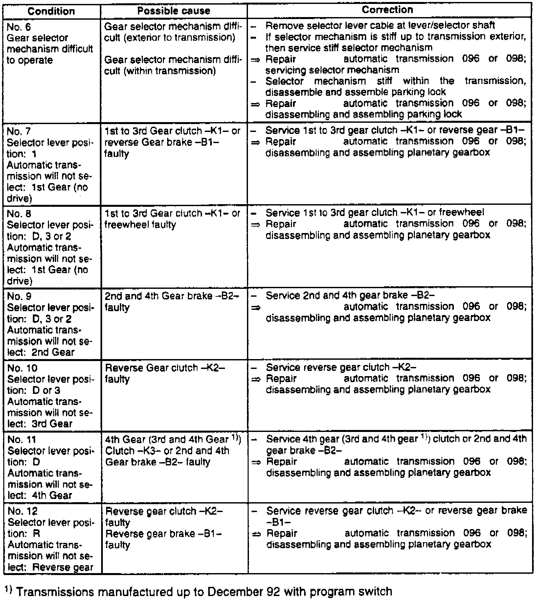
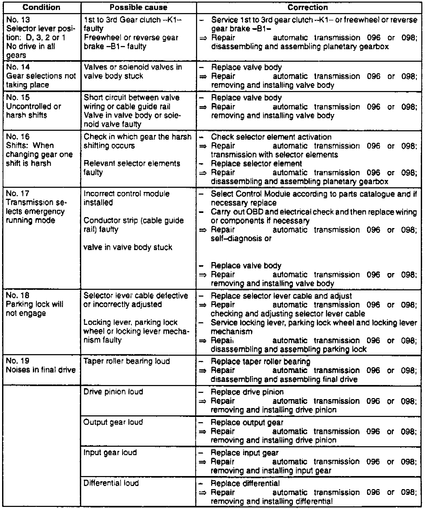
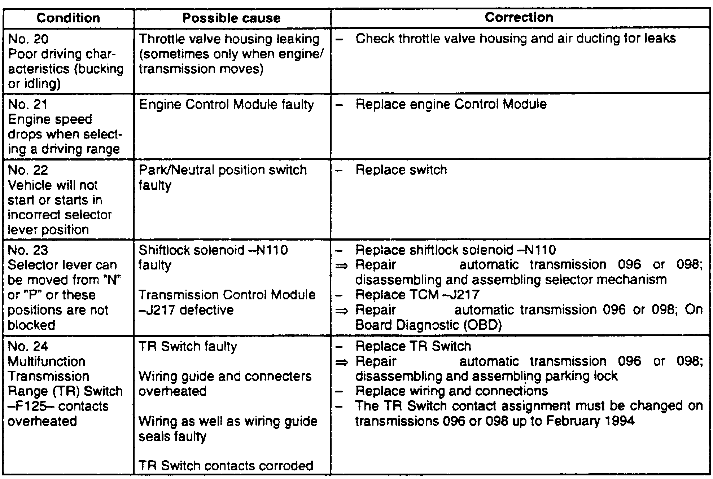

Symptom Related Diagnostic Procedures
Fig. 3 Transaxle Troubleshooting (Part 1 Of 4):

Fig. 3 Transaxle Troubleshooting (Part 2 Of 4):

Fig. 3 Transaxle Troubleshooting (Part 3 Of 4):

Fig. 3 Transaxle Troubleshooting (Part 4 Of 4):

Refer to Fig.3 for troubleshooting procedures.